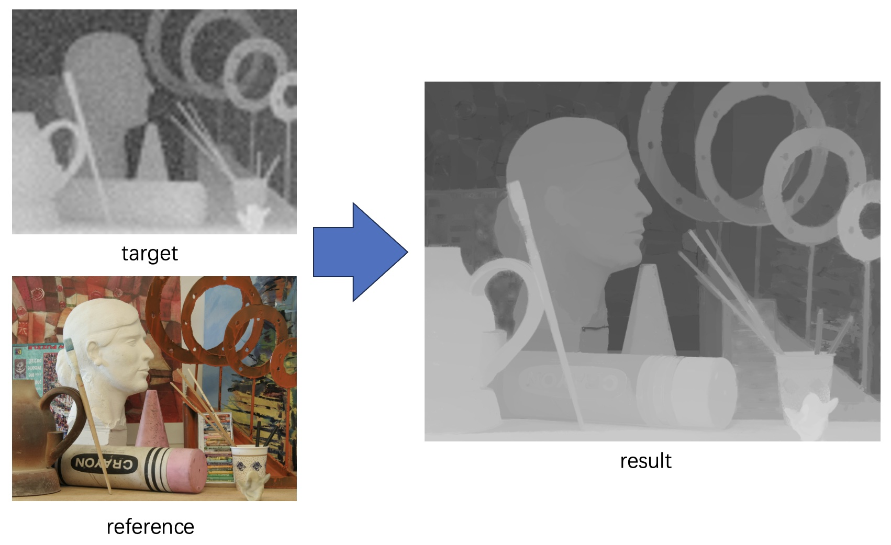

|
Yuheng Tu I'm a third-year undergraduate student from School of Information Science and Engineering, Southeast University. I will be an exchange student at UC Berkeley EECS during 24 spring. I am very fortunate to be advised by Prof. Qiao Wang from Southeast University. I am a research assistant at Purple Mountain Lab working with Prof. Yinfei Xu and Prof. Hua Zhang. I am also a research assistant at State Key Lab of Millimeter Waves working with Prof. Jianan Zhang. Email(gmail) / Email(edu) / CV / Github |

|
ResearchMy research interest is machine learning. |
|  |
Yuheng Tu, Yunlang Cai, Yajun Lv, Yinfei Xu, Convolutionalize the loss function of Jon Barron’s Fast Bilateral Solver (ECCV 2016 Runner-up) and optimize depth image with it |

|
Yuheng Tu, Jianan Liu, Tian Qiu, Yunlang Cai, Jianan Zhang, Jian Wei You, Tie Jun Cui, Photonics & Electromagnetics Research Symposium (PIERS), 2023 Paper / PIERS 2023 / Develop the neuro-TF model (combines neural networks and pole-residue-based transfer function) which provides accurate and fast prediction of the EM behavior of a metasurface and thus greatly accelerate the design process. |
|
Website template |